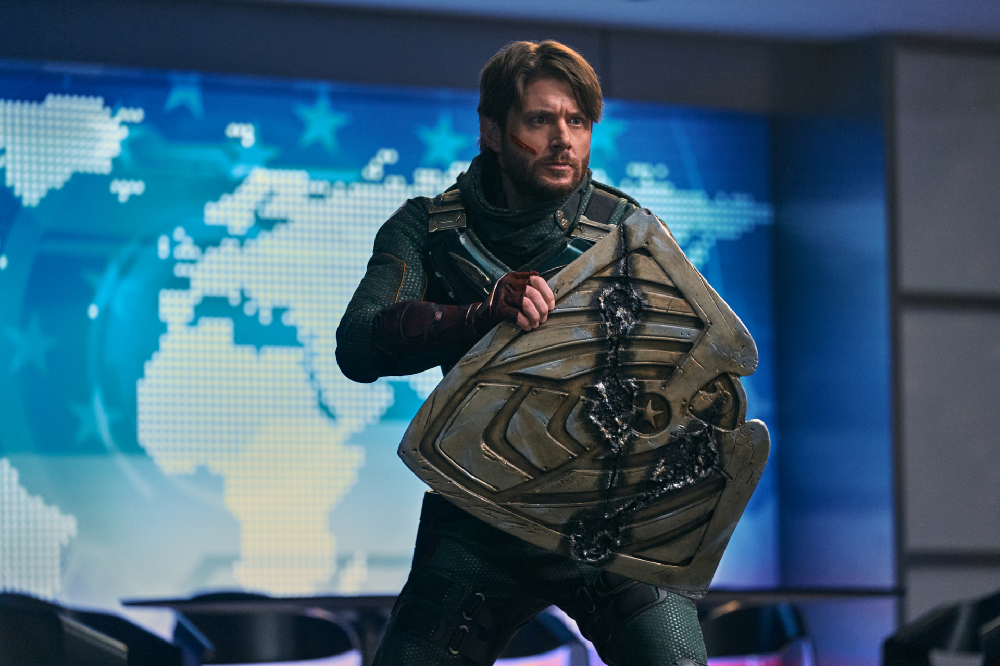

About Soldier Boy
As a young man, Soldier Boy helped good triumph over evil in World War II, although this was contested by The Legend, who claimed it was Vought propaganda. With his superhero team Payback by his side, he was said to have fought for liberty and justice for all until his disappearance during a botched military operation in Nicaragua, with the cover story being that he heroically sacrificed his own life to save America from a nuclear power plant meltdown in 1984.
Soldier Boy VS The Boys
Characteristics
- Species: Supe
- Gender: Male
- Height: 6'1" (1.86 m)
- Age: 102-103
- Date of birth: 1919